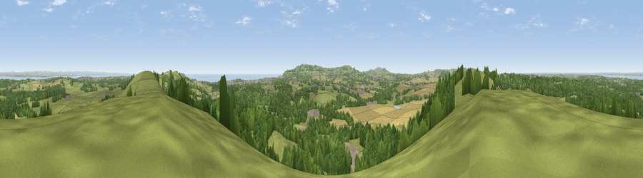

Viewpoint near Newchurch
#1692 in England · top 17% of its area beats it · near NewchurchThe view, rendered

A 360° render of this exact spot computed from the terrain model, tree cover and land cover — summer colours, afternoon light, calibrated against photographs of famous viewpoints. Real trees, hedges and buildings will differ in detail.
The panorama
Grey silhouette: terrain skyline in each direction (720 bearings, Earth curvature and refraction included). Dashed green: skyline with trees (+15 m) and buildings (+8 m) as obstacles. Blue strip: how far the ground is visible on each bearing.
Where the view opens
Wedge length = distance to the farthest visible ground on that bearing (vegetation-aware). Rings at 10, 25 and 50 km.
What fills the view
45% grassland · 33% woodland · 14% cropland · 4% water · 3% built-up
Angular shares of the visible panorama (visual magnitude), not map area. Landscape diversity 0.54 (0–1 Shannon).
Key numbers
More beautiful places nearby
The staircase of upgrades: each row has a higher view potential than everything closer. Driving times are estimates from straight-line distance, calibrated against real road routing — check an actual route before setting out.
| Place | Direction | Drive | Score |
|---|---|---|---|
| Arreton Down | W · 1 km | ~3 min | 77.7 |
| Viewpoint near Alverstone | E · 3 km | ~7 min | 79.1 |
| Shanklin Down | S · 7 km | ~15 min | 84.7 |
| Viewpoint near Upper Bonchurch | SSE · 9 km | ~17 min | 86.4 |
| Viewpoint near St. Lawrence | S · 10 km | ~19 min | 88.2 |
| Viewpoint near Niton | SSW · 13 km | ~24 min | 89.2 |
| Viewpoint near West Bexington | W · 101 km | ~125 min | 89.5 |
| The Knoll | W · 102 km | ~126 min | 91.0 |
50.68293, -1.21331 · source: screening · position refined by local search. Computed location — check access rights before visiting.